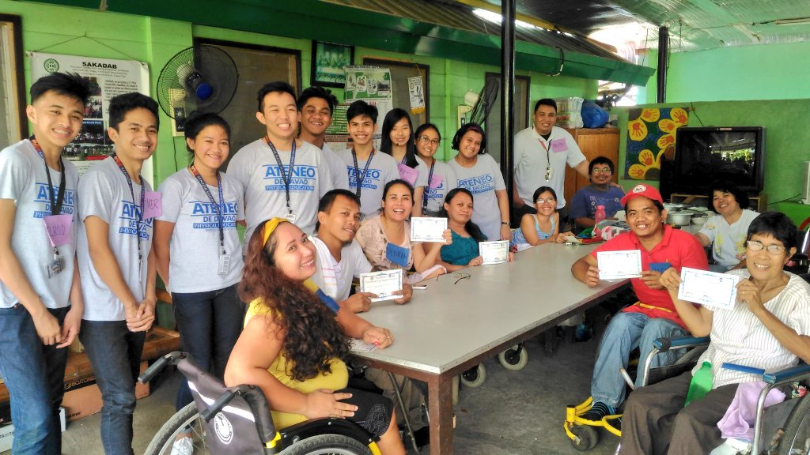

Home | Profile | Needs Assessment Resource Matching | Science | Gallery
Jump to
Financial Problems | Disability Discrimination | Resource Matching | Questions for Institution | Insight Questions
Problems that occur in this type of community are financial troubles. In the community, they are short on basic human
needs and other resources. Some citizens living there might not be prioritized and supported since there are limited
necessities/supplies. According to the SAKADAB community profile, they have especially been hit hard by the pandemic.
Ever since the pandemic hit, they have struggled with finding a stable source of income to fill the needs of the people
residing in the institution grounds. The financial troubles that the community faces also directly affects the presence
of medical supplies in the area, thus making the risk of a medical problem more likely.

Another problem that is evident until now, is disability discrimination. Many people with disabilities especially in
this institution, face discrimination, prejudice, and stereotype by the people in the present world. They are not given
the same equal amount of treatment by the people. Which makes our PWD friends feel that they are not welcome in the society.
After having analyzed the consumptions of our partner institution, the needs that they have that are unmet are mostly financial
needs. This has been evident in the community needs analysis section of the community profile sheet wherein it states that the
institution is having a hard time finding regular and stable income to purchase some of their essential needs. A lack of medical
supplies in the area is also evident based on the needs analysis as a direct result from the financial problems. This makes it hard
for our partner community to keep tabs on the medical conditions of its occupants especially in the COVID-19 pandemic.
The resources that our group owns, controls, or can acquire that can be used to meet our partner community’s
needs are the appropriate resources needed to start a compost (orange peels, mushrooms and compost pit or tray),
resources needed to plant (soil, water, pot, and ampalaya seeds), and resources such as money, time, and labor.
We could put these resources together to meet the unmet needs of our partner community by making a sustainable compost that would
ease the financial situation in their community. The compost would be a mix of orange peel and white mushroom in order to maximize
its effectiveness. The compost can help address the issue of our partner institution by easing the finances they spend on compost and
food as well, while also minimizing food waste in the community. Resources that can be used for planting such as pots, soil, and seeds
can be used once for testing of the compost. Our proposal can be sustainable and not just a temporary one-off that cannot continue once
we say goodbye to our partner institution because it is a sustainable product that can be made simply out of the food wastes that our
partner institution produces. It can also be continued because it takes up very little time and is a lot easier to produce. Plus, it
can be made in many batches for quicker, more consistent supply.
What encouraged you to start the SAKADAB foundation?
What was the original goal of the foundation? Do you think you have achieved it?
Have you or any of the other members of the organization received unequal or discriminatory treatment because of your handicap?
How do you acquire your source of income? Are there any programs implemented in order to help acquire this?
Are there certain individuals supporting you in the beneficiaries and maintaining the operations of the institution?
How will you further maintain the funds in the near future?
How many young children/youth are currently under a form of education?
In your opinion, do you think that the youth in the village are receiving proper education?
Do you think there is a good supply of school materials (eg. pencils, books, notebooks)?
Are there any health facilities present in the site?
Are there any recreational activities present in the site?
Do you think these facilities are properly and well maintained?
The important information we need to know about this community is that they are a community that helps for and advocates for PWDs
or handicapped persons. With their restrictions, they have honed their skills and come together to improve the quality of
their living despite the lack of social welfare support for the disabled in the Philippines. In honour of the strength of their
PWD brothers and sisters who maximize their potential, they raised funds to support their ongoing initiative to help the PWDs
across Davao and the Philippines. It is important for us to know the cause that their community is fighting for so that we can
play our part and support this cause as well.
Our geometry learnings in math helped us in our ET3/PT as a reflective problem solver by helping us in designing and implementing
our website. Geometry has an important place in designing, which is why we applied our lessons in geometry in order to design our
website. Concepts in geometry such as finding midpoint and distance helped us when trying to observe a clean and symmetric design
in our website.
As an Atenean, it is important to raise awareness to this type of community because communities like our partner institution do
their best to help alleviate the burden that PWDs go through in their regular day-to-day basis. Raising awareness to this type
of community enables them to be heard by more people and potentially grow bigger and help more around the community. Communities
like these also encourage empowerment of the PWDs around Davao. Recognizing such a community and raising awareness can also help
the living situation of the PWDs in the city by helping minimize the discrimination and inequal opportunities that they may have received.
Visit SAKADAB Social Media and other information!